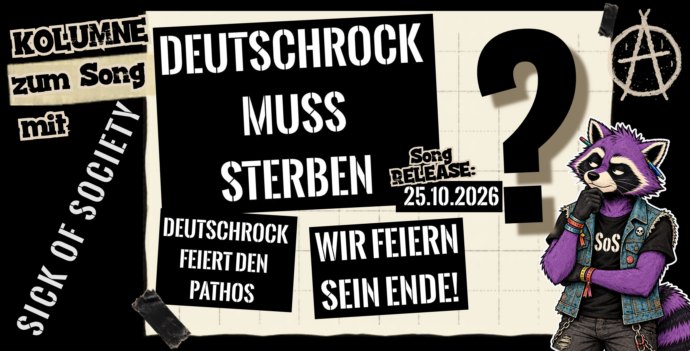

Kolumne
Deutschrock muss sterben. Aber was zum Teufel ist Deutschrock?
„Der Burg“ diskutiert mit Sick of Society über Deutschrock, Punk und die Frage, was hier eigentlich sterben soll.
Text und Fragen: „Der Burg“ · Antworten: der Autor des Songs von Sick of Society.

Sick of Society wollen, dass Deutschrock stirbt.
Das ist erst einmal eine Ansage. Vor allem von einer Band, die selbst Rockmusik macht.
Auf Deutsch.
Scheiße.
Jetzt müssen wir wohl klären, was Deutschrock überhaupt ist.
Mit Sick of Society habe ich praktisch seit den Anfängen von RandaleFUNK zu tun. Ebenso mit ihrem Umfeld bei Pauli Punker Records. Ich weiß ziemlich genau, wo diese Menschen politisch stehen. Bei deren Haltung muss ich nicht erst mit einer Taschenlampe in irgendwelche dunklen Ecken leuchten.
Das bedeutet allerdings nicht, dass ich automatisch alles unterschreibe, was sie auf ein Plattencover, einen Flyer oder in einen Song schreiben.
Wäre ja auch langweilig.
Am 25. Oktober erscheint ihr neuer Song „Deutschrock muss sterben“. Der Titel erinnert ziemlich unübersehbar an „Deutschland muss sterben“ von SLIME.
Nur dass hier keine Deutschland-Debatte aufgemacht wird.
Also habe ich den Autor des Songs gefragt, was genau da eigentlich sterben soll.
Und weil er sich bei seinen Antworten sichtbar Mühe gegeben hat, lasse ich ihn auch ausreden.
Was ist überhaupt Deutschrock?
Meine erste Frage war zwangsläufig die offensichtlichste:
Was bedeutet „Deutschrock“ für euch überhaupt? Geht es um die Musik oder eher um die Haltung und die Szene dahinter?
Das ist gar nicht so leicht auf den Punkt zu bringen, weil der Begriff enorm schwammig ist. Streng genommen fallen darunter ja auch etablierte Künstler wie Herbert Grönemeyer oder Marius Müller-Westernhagen... die meinen wir damit aber keineswegs! Im Kontext unseres Songs geht es uns nicht um die musikalische Schublade, sondern um die Haltung, die Ästhetik und das gesellschaftliche Weltbild, das in weiten Teilen der sogenannten Deutschrock-Szene gepflegt wird.
Damit liegt das erste Problem schon ziemlich sauber auf dem Tisch.
Wenn ich „Deutschrock“ sage, könnte ich theoretisch jeden meinen, der Rockmusik macht und dabei Deutsch singt. Westernhagen, Grönemeyer, HÄMATOM, Böhse Onkelz, Frei.Wild oder irgendeinen Typen aus Castrop-Rauxel, der gerade im Proberaum „Scheiß System“ über ein AC/DC-Riff grölt.
Nur beschreibt der Begriff innerhalb der Szene längst nicht mehr bloß die Kombination aus deutscher Sprache und Gitarren.
Deutschrock ist für viele zu einem Gesamtpaket geworden. Ein Paket aus Stolz, Ehre, Härte, Heimat und dem festen Glauben, dass da draußen grundsätzlich alle gegen einen sind.
Der einsame Wolf mit fünf Kumpels im Rücken und einem Adler auf dem T-Shirt.
Und selbstverständlich wird gekämpft.
Fürs Leben. Gegen die Welt. Für die Brüder. Gegen Verräter. Gegen Hater. Wahrscheinlich morgens auch gegen den Deckel vom Marmeladenglas.
Natürlich macht das nicht jede Band. Und nicht jeder Mensch, der diese Musik hört, bestellt sich anschließend einen Wolfskopf für die Wohnzimmerwand.
Trotzdem weiß man meistens verdammt schnell, welche Ästhetik gemeint ist.
Punk klingt manchmal verdächtig ähnlich
Das Gemeine an der Sache ist: Wenn man nur zuhört, wird die Grenze plötzlich ziemlich unscharf.
Das hatten wir sogar schon einmal bei RandaleFUNK.
Beim Online-Band-Contest hörte Diggen – ehemals SLIME, später unter anderem Rastaknast und Swiss & Die Andern – einen eingereichten Song von FÄEX.
Irgendwann stand genau diese Frage im Raum:
Wo endet Punkrock und wo beginnt eigentlich Deutschrock?
Der Gesang grölt, die Gitarren sind verzerrt und der Refrain sitzt nach zwei Bier. Den Text versteht man stellenweise nur, wenn jemand das Booklet danebenhält und mit dem Finger mitgeht.
Musikalisch kommen wir also nur bedingt weiter.
Deshalb habe ich Sick of Society genau das gefragt:
Wo ist für euch die Grenze zwischen Punkrock und Deutschrock? Musikalisch liegt das ja manchmal ziemlich nah beieinander.
Richtig... Musikalisch sind die Übergänge absolut fließend. Beide Genres bedienen sich schließlich sehr ähnlicher Rezepte: verzerrte Gitarren, drückendes Schlagzeug, treibende Rhythmen und deutsche Texte. Der eigentliche Unterschied liegt in der Geisteshaltung, der politischen Positionierung und vor allem dem Auftreten. Deutschrock bringt für mein Verständnis fast immer eine extrem überspitzte, oft toxisch-maskuline Ästhetik mit sich, die im Punk gezielt abgelehnt und hinterfragt wird. Generell sehe ich den heutigen Deutschrock eher als eine Art konservative Gegenbewegung zum Punk.
Da wird es interessant.
Wenn diese Definition stimmt, ist Deutschrock gar nicht in erster Linie ein Musikgenre.
Dann ist Deutschrock eine Haltung mit Gitarren.
Damit kann ich wesentlich mehr anfangen als mit irgendwelchen BPM-Werten oder der Frage, wie tief der Sänger morgens gegurgelt hat.
Allerdings sollte Punk jetzt vorsichtig sein, bevor er sich selbst den Heiligenschein aus Sicherheitsnadeln aufsetzt.
Toxische Männlichkeit wurde schließlich nicht exklusiv für Deutschrock erfunden. Auch wir haben genügend Typen, die Härte mit Trinkfestigkeit verwechseln. Genügend Macker vor und hinter Bühnen. Genügend Leute, deren politische Bildung aus drei Aufnähern besteht und die danach glauben, das Thema Kapitalismus sei abschließend geklärt.
Das eigene „Wir gegen den Rest“ heißt bei uns nur Widerstand.
Bei den anderen ist es eine hohle Parole.
Praktisch.
Deutschland muss sterben. Deutschrock jetzt auch.
Natürlich wollte ich wissen, ob die Ähnlichkeit zum SLIME-Klassiker Zufall ist.
War sie nicht.
Ist „Deutschrock muss sterben“ eine Anspielung auf SLIMEs „Deutschland muss sterben“? Und wenn ja: Was wollt ihr mit eurem Satz genau sagen?
Kurz gesagt: Ja, natürlich ist das eine Anspielung auf SLIME. Die Entstehungsgeschichte dahinter ist allerdings weit weniger spannend als gedacht: Als das Demo fertig vor uns lag, wirkten die Instrumentalteile zwischen den Strophen stellenweise noch etwas kahl. Wir haben nach einer prägnanten, kantigen Punchline gesucht. „Deutschrock muss sterben“ lag da einfach auf der Hand. Uns hat besonders der Kontrast zwischen dieser extrem unmissverständlichen Ansage und den eher verklausulierten, bildhaften Strophen des Songs gereizt.
Ich liebe solche Entstehungsgeschichten.
Man erwartet zwanzig Seiten politische Theorie. Nächtliche Diskussionen über Gramsci, Adorno und die Dialektik der Lederhose.
Am Ende war da einfach eine freie Stelle im Song.
„Da fehlt noch was.“
„Deutschrock muss sterben?“
„Joa.“
Rein damit.
Punkrock kann herrlich unkompliziert sein.
Der Unterschied zum SLIME-Song bleibt trotzdem spannend. „Deutschland muss sterben“ klingt isoliert betrachtet maximal brutal. Der Song dahinter ist aber keine stumpfe Vernichtungsfantasie gegen Menschen, weil sie zufällig einen deutschen Pass besitzen.
Sick of Society greifen die maximale Provokation auf und richten sie gegen etwas, das sie recht konkret definieren: nicht gegen Rockmusik auf Deutsch, sondern gegen das Weltbild, das für sie hinter der Deutschrock-Szene steckt.
Damit landen wir zwangsläufig bei ein paar Namen.
Onkelz, Frei.Wild und die verdammte Nazischublade
Bei Diskussionen über Deutschrock dauert es selten lange, bis Böhse Onkelz oder Frei.Wild auf dem Tisch liegen.
Kurz danach fällt irgendwo das Wort „Nazis“.
Damit habe ich ein Problem.
Die Geschichte der Onkelz muss ich nicht schönreden. Und auch das Heimatpathos von Frei.Wild löst bei mir keine wohlige Gänsehaut aus.
Aber „Naziband“ ist mir als vollständige Erklärung zu billig.
Ich kann das ständige Härte-Gehabe kritisieren, die übertriebene Maskulinität, das Gerede von Stolz und Loyalität, die gepflegte Opferrolle und die Erzählung von der eingeschworenen Gemeinschaft, gegen die sich angeblich die ganze Welt verschworen hat.
Dazu kommen politische Grauzonen, historische Altlasten und ein Umfeld, in dem die Grenze nach rechts nicht immer so sauber aussieht, wie ich sie gerne hätte.
Das reicht vollkommen, um etwas problematisch zu finden.
Ich muss niemandem erst einen Hitlerbart ankleben, bevor Kritik erlaubt ist.
Also fragte ich Sick of Society:
Sind Bands wie Böhse Onkelz oder Frei.Wild für euch das Problem? Oder geht es eher um bestimmte Themen wie Stolz, Ehre, Härte, Tradition und dieses „wir gegen den Rest“?
Das lässt sich nicht einfach über einen Kamm scheren. Dieses permanente „Stolz-, Ehre- und Härte“-Gehabe finde ich persönlich ehrlich gesagt einfach nur anstrengend, peinlich und aus der Zeit gefallen. Das Problem liegt für mich auf zwei Ebenen: Zum einen transportiert die Musik ein sehr veraltetes, stereotropes Männer- und Rollenbild („Steh auf und kämpf“, „Echte Kerle trinken und raufen“). Zum anderen besitzen gerade die genannten Bands aufgrund ihrer Historie und ihrer Themenwelt eine gewisse Scharnierfunktion: Sie können für Jugendliche als Einstiegsdroge in den eigentlichen Rechtsrock fungieren. Ich unterstelle den Bands dabei gar keine böse Absicht – sie distanzieren sich ja auch regelmäßig. Aber wer auf dem Land aufgewachsen ist, weiß genau, mit welchen radikaleren Bands sich deren Songs auf privaten Playlists oder in Partykellern die Klinke in die Hand geben. Selbst wenn die Musik nicht explizit politisch oder rechts ist, bietet sie durch Werte wie Heimatverklärung und Pathos eine gefährlich niedrige Hemmschwelle nach rechts außen.
Den Begriff „Scharnierfunktion“ finde ich wesentlich interessanter als den üblichen Nazi-Stempel.
Er behauptet nicht automatisch, dass jeder Frei.Wild-Hörer morgen als Rechtsextremist aufwacht. So funktioniert die Welt nicht.
Aber ich kenne diese Partykeller.
Die Playlist beginnt bei einer Band, über deren politische Einordnung man noch vortrefflich streiten kann. Dann folgt eine, bei der die Diskussion bereits kürzer ausfällt. Irgendwann steht man neben einem Vollpfosten, der völlig überrascht ist, dass man seine Lieblingsband nicht ebenfalls für „unpolitisch“ hält.
Das ist noch kein Beleg für einen festgelegten Radikalisierungsweg. Eine Dorfparty ist keine wissenschaftliche Langzeitstudie.
Dass Musik, Ästhetik und Gruppenzugehörigkeit Schwellen verschieben können, würde ich trotzdem nicht einfach wegwischen.
Deshalb ist es sinnvoller, über Inhalte zu reden als bloß über Etiketten. Welches Männerbild wird da verkauft? Was bedeutet Heimat in diesen Texten? Wer darf zum großen „Wir“ gehören – und wer sind immer diese ominösen anderen?
Und warum muss der Sänger permanent kämpfen?
Vielleicht sollte er einfach mal einen Tee trinken.
Und was machen wir jetzt mit HÄMATOM?
An diesem Punkt kommen Sick of Society und ich nicht vollständig zusammen.
Ich habe gefragt:
Kann es für euch guten Deutschrock geben? Also eine Band, die musikalisch klar in die Richtung geht, aber politisch und menschlich völlig korrekt ist?
Für mich persönlich schließt sich das ehrlich gesagt rein von der Logik her aus. Wenn man – wie vorhin beschrieben – Deutschrock nicht nur als rein musikalische Formel begreift, sondern über die typischen Inhalte, die Ästhetik und die Haltung definiert, hebt eine klare, reflektierte Haltung dieses Genre im Grunde sofort auf. Ist eine Band politisch und menschlich stabil, landet sie in meinen Augen fast automatisch im Punk, Post-Punk oder Indierock – und unterscheidet sich damit grundlegend von dem, was man gemeinhin unter der Subkultur „Deutschrock“ versteht. Mir wäre zumindest kein Beispiel bekannt, auf das das zutreffen würde.
Und genau da bleibe ich hängen.
Diese Definition besitzt einen ziemlich eleganten Haken: Guten Deutschrock kann es logisch gar nicht geben.
Sobald eine Band politisch stabil ist, hört sie nach dieser Definition einfach auf, Deutschrock zu sein.
Das ist natürlich praktisch.
Vielleicht sogar ein bisschen zu praktisch.
HÄMATOM würde ich musikalisch ziemlich problemlos in die große Kiste „harter deutschsprachiger Rock“ werfen. Bei ihrer politischen Haltung bekomme ich allerdings nicht dieselben Bauchschmerzen wie bei Teilen der klassischen Deutschrock-Szene. Aus meiner Sicht stehen sie politisch ziemlich eindeutig dort, wo ich sie gerne habe.
Was sind sie dann?
Alternative Metal? Neue Deutsche Härte? Punk mit größeren Gitarren? Vier Typen mit Farbe im Gesicht?
Vielleicht zeigt das nur, wie nutzlos Genres irgendwann werden.
Ein Etikett soll Musik leichter einordnen. Wenn vor der Zuordnung erst eine politische Gesinnungsprüfung stattfinden muss, ist das Etikett möglicherweise einfach kaputt.
Trotzdem verstehe ich den Gedanken von Sick of Society.
Wer heute von „der Deutschrock-Szene“ spricht, meint meistens nicht Herbert Grönemeyer. Gemeint ist eine eigene Subkultur mit bestimmten Festivals, Codes, Themen und einer Ästhetik, die man bereits aus zwanzig Metern Entfernung riechen kann.
Dann ist „Deutschrock“ kein rein musikalischer Begriff mehr.
Vielleicht reden Sick of Society und ich also teilweise über zwei verschiedene Dinge, obwohl wir dasselbe Wort benutzen.
Vielleicht muss gar nicht der Deutschrock sterben
Muss Deutschrock sterben?
Wenn damit Rockmusik mit deutschen Texten gemeint ist: natürlich nicht.
Das wäre auch ziemlich beschissen für RandaleFUNK. Ich müsste anschließend ungefähr die Hälfte der Website löschen.
Ein bestimmtes Gitarrenriff muss ebenfalls nicht sterben. Musik gehört niemandem. Kein Akkord ist rechts und kein Schlagzeugbeat konservativ. Eine verzerrte Gitarre hat noch nie bei einer Bundestagswahl ihr Kreuz gemacht.
Wenn Sick of Society mit „Deutschrock“ allerdings dieses Paket aus toxischem Männerbild, Heimatkitsch, Selbstmitleid und ewigem Stolz-Ehre-Härte-Gedöns meinen, wird mein Widerspruch deutlich kleiner.
Punk darf sich dabei nur nicht heimlich aus der Verantwortung schleichen.
Dieselbe Scheiße wird nicht besser, wenn sie auf einer Punkplatte landet. Ein Macho bleibt ein Macho, auch wenn „ANTIFA“ auf seiner Kutte steht. Ein Arschloch wird nicht zum besseren Menschen, weil es statt Frei.Wild lieber irgendeine crustige Siebenzoll hört, die nach einem brennenden Müllcontainer klingt.
Vielleicht sollten wir deshalb weniger darüber diskutieren, welche Schublade sterben muss.
Entscheidender ist, welche Haltung wir begraben wollen.
Das ganze Männerbund-Gedöns kann weg. Härte als angeblicher Charakterzug ebenfalls. Heimat als politische Ersatzreligion darf direkt hinterher.
Musik auf Deutsch kann bleiben.
Sonst hätte ich hier demnächst verdammt wenig zu besprechen.
Sick of Society haben ihre Position jedenfalls deutlich gemacht.
„Deutschrock muss sterben“ erscheint am 25. Oktober 2026.
Ob ich den Satz vollständig unterschreibe?
Offensichtlich nicht.
Aber wenn eine gute Provokation dazu führt, dass man anschließend zwei Stunden darüber nachdenkt, was ein Musikgenre mit Politik, Männlichkeit und Haltung zu tun hat, hat Punk ziemlich genau das gemacht, was Punk verdammt noch mal machen soll.
Diskussion eröffnet.
Den Rest könnt ihr euch jetzt gegenseitig um die Ohren hauen.
Zum Gespräch: Die Antworten wurden von Sick of Society zur Veröffentlichung freigegeben und sprachlich unverändert übernommen. Sie geben die Einschätzungen des Antwortenden wieder; Burgs Kommentare stehen außerhalb der Zitatblöcke.